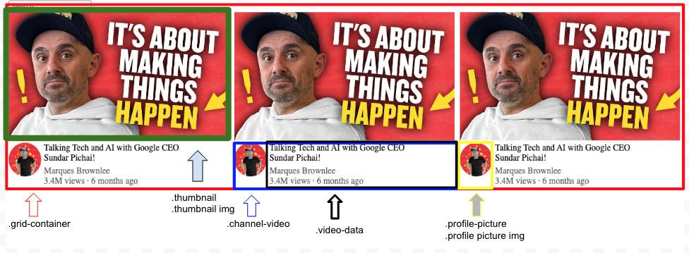
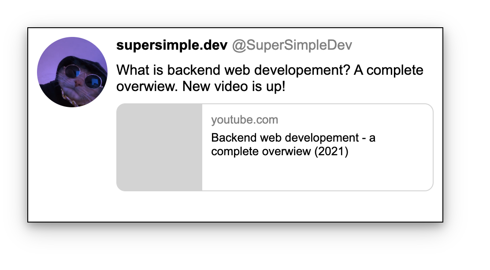
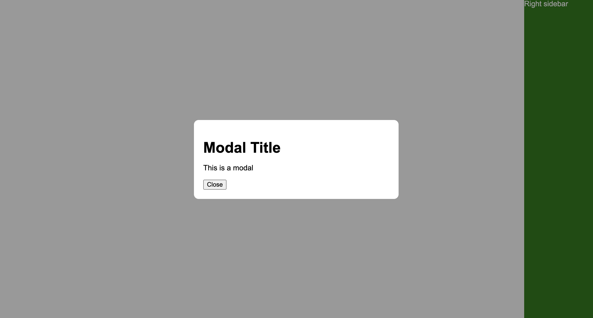
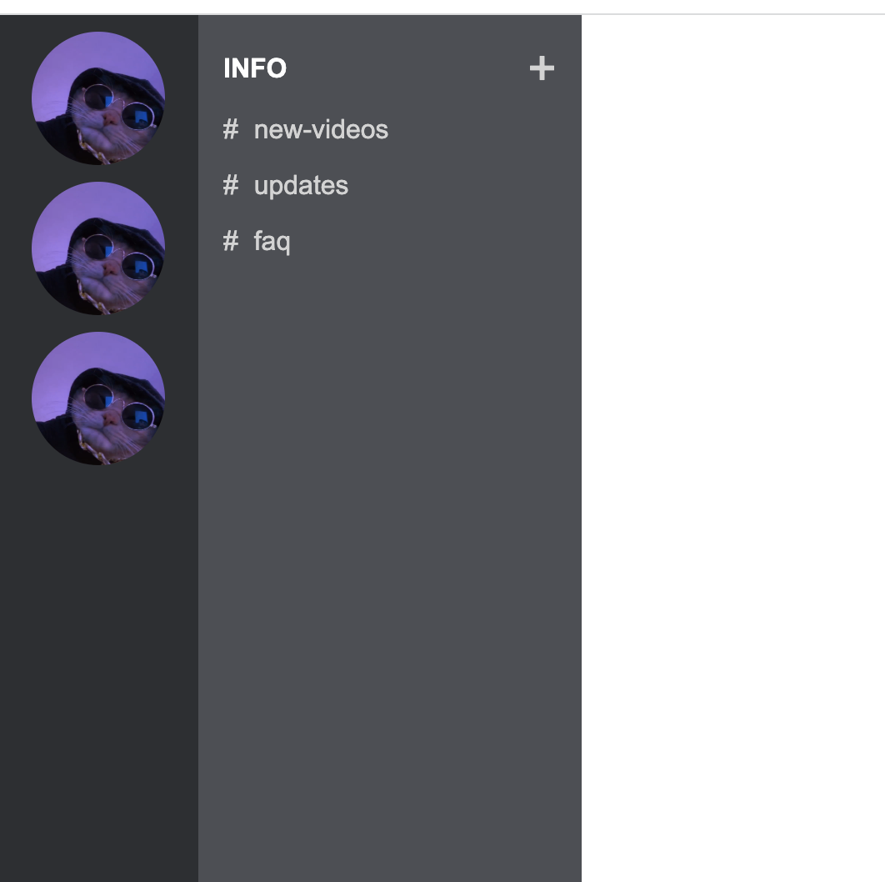

07/04/2023 (Fri)
Lesson
06/04/2023 (Thursday)
Yesterday, I started a HTML and CSS course again. Although I have some
knowledge about creating websites, it is very limited. I am familiar
with most of the syntax, but I have always wanted to learn how to create
professional websites. I have experience in AWS services, Javascript and
Node.JS, so it would be quite sad if I did not know the basics, or even
more, about creating nice websites. I will document my journey every day
and have a detailed record of creating my own portfolio website.
Below is the website created with
youtube tutorial
. I wanted to create it from A to Z. Here are some results made on
thursday:
Work from Youtube Tutorial
07/04/2023 (Friday)
As a part of a YouTube tutorial, I will be creating a website that
replicates the look and feel of the YouTube platform. This project will
serve as a comprehensive documentation of my entire process, from start
to finish. The goal of this project is to gain practical experience with
HTML and CSS, as well as to learn about the design principles and user
interface techniques used by YouTube. By creating a clone of the
platform, I hope to gain a deeper understanding of how websites are
structured and how design choices can influence user experience.
Throughout this project, I will be breaking down each step of the
process, including creating the page layout, styling the page elements,
and implementing interactive features. By documenting my progress, I
will not only have a record of my work, but I will also be able to
reflect on my learning journey and share my experience with others. In
addition to gaining technical skills, I also hope to develop my
problem-solving abilities and increase my attention to detail. By
tackling a complex project like this, I will encounter challenges and
obstacles that will require me to think creatively and come up with
solutions. Overall, this project will be a valuable learning experience
for me, as well as an opportunity to showcase my skills and knowledge to
others.
Youtube Clone
08/04/2023 (Saturday)
Today I continue studying HTML + CSS tutorial from Youtube. I stopped on
2:46:00, where autor gives some excercises to do. For couple minutes I
was struggling with excercise where I had to create a clone of tweeet
posting bar. Below is an image of the final result:

The thing i was struggling with for a while was that I didn't know how
to give enough amout of space for that input text. After a while I
realized that there is a CSS property called 'display: flex'. I inserted
that property for the whole container. That property helped me to set
"flex-grow: 1" on the input type, so now it takes any space left in the
container. That helped me a lot with the rest of tutorial excercises:
09/04/2023 (Sunday)
Today, being Sunday, may not have been the most productive day, but it's
important to keep moving forward, even if it's just a little bit. Today,
I spent some time learning about The Nested Layout Technique. This is a
web design approach that involves nesting multiple containers inside
each other to create a more complex layout. By nesting containers, you
can create a more dynamic and flexible layout that adapts to different
screen sizes and resolutions. It's a useful technique to have in your
toolbox as a web developer, and I'm excited to experiment with it
further in my future projects.
Here is an example of the nested technique when it comes to Youtube
Videos:
The top section features a thumbnail image of the video, while the
bottom section contains two vertically aligned divs. The left div
showcases the profile picture of the YouTube channel, while the right
div displays important video details such as the title, channel name,
and upload date. This technique is commonly used in web development to
create visually appealing and organized layouts for video content.
10/04/2023 (Monday)
Today I properly recreated 'recommended videos' section on YouTube. I
will provide a HTML, CSS code that represents the structure of these
videos.

The .grid-container class sets up a grid layout with three equal columns
and a gap of 10px between them, which corresponds to the structure of
YouTube's recommended videos.
The .channel-video class creates a grid layout with two columns: one for
the profile picture and another for the video data. The gap of 5px between
them provides some space for separation, similar to YouTube's design.
The .thumbnail and .thumbnail img classes ensure that the video
thumbnail image takes up the full width of its container, which matches
the layout of YouTube's recommended videos.
The .profile-picture and .profile-picture img classes style the profile
picture as a circular image, which is consistent with YouTube's design.
The .video-data and related classes handle the text styling and spacing
for the video title, author, and statistics, closely resembling the
appearance of YouTube's recommended videos.
12/04/2023 (Wednesday)
Today, I recreated a sample tweet from Twitter. The tweet features a
user sharing a YouTube video along with a brief description. In this
project, I designed the layout to resemble a Twitter post, including the
user's profile picture, display name, username, and the shared YouTube
video:

13/04/2023 (Thursday)
Today, I had a small tasks to complete, which involved creating a sticky
element on a webpage. A sticky element remains fixed in the viewport
while the user scrolls, ensuring that it's always visible. In this case,
I created a sticky element positioned at the bottom-right corner of the
page.
Also, I worked on creating a double sidebar layout inspired by Discord.
I used flexbox to position the two sidebars next to each other and
adjusted the colors to resemble Discord's theme. It was a great exercise
to practice using display: flex and getting familiar with Discord's
design aesthetics.


14/04/2023 (Friday) - Position relative/absolute
Today's lesson is dedicated to positioning elements on top of other
elements. The example below shows a t-shirt for sale. My task was to add
and position a "20% OFF" element at the top-right corner and an "Add to
cart" button at the bottom of the product image.
To achieve this, I created a container called "product" and set its
position property to "relative". This allowed me to use absolute
positioning for its child elements, the "discount" element and the
"button-container". By setting the position property of the "discount"
element to "absolute" and specifying "right: 0" and "top: 10px", I was
able to position it at the top-right corner of the product container.
Next, I added a "button-container" div and set its position property to
"absolute" as well. To position it at the bottom of the product
container, I set the "bottom" property to 0 and used "left: 0" and
"right: 0" to stretch it across the full width of the container. Inside
the "button-container", I used flexbox properties to center the "Add to
Cart" button both horizontally and vertically.
In conclusion, by combining the relative and absolute positioning
properties, I was able to create a visually appealing product layout
with overlaid elements, showcasing the power and flexibility of CSS
positioning techniques.